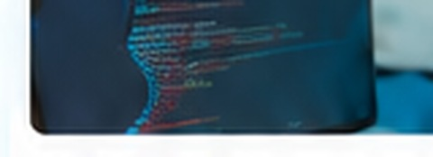

依頼したい企業
- 社内リソースが足りない
- 専門的な知識がほしい
- コストを抑えて進めたい
その仕事、
外注ドットコムは、厳選されたプロフェッショナルと企業をつなぎ、
プロジェクトの最適な外注運営を一気通貫でサポートします。
SERVICE
Web制作・システム開発・SNS運用・広告運用・コンサルティングなど、
ビジネスに必要なあらゆる業務を、厳選されたフリーランスのプロに依頼できるマッチングサービスです。
SERVICE
コーポレートサイトやLPなど、幅広い用途でのWeb制作を支援します。

業務システム・Webアプリなどの開発を、経験豊富なエンジニアが支援します。
SNSの戦略設計からコンテンツ制作・運用まで一貫して支援します。
Google・SNSなどの広告運用で、集客・売上拡大を支援します。
事業戦略・業務改善など専門知見を活かしたコンサルティングを提供します。
FEATURE
経験豊富な専属PMが、プロジェクトの企画から納品まで一貫してサポート。
厳正な審査を通過した、信頼できるフリーランスが多数在籍。
ご予算や目的に応じて、最適な人材・プランをご提案します。
FLOW
フォームまたはお電話で、現在の課題やご要望をお聞かせください。まだ要件が固まっていなくても問題ありません。
課題・目的・ご予算・スケジュールなどを丁寧にヒアリングし、最適な進め方を一緒に整理します。
ヒアリング内容をもとに、最適なフリーランス人材と具体的なプラン・お見積りをご提案します。
ご提案内容にご納得いただいた後、ご契約を行い、専任PMのサポートのもとプロジェクトを開始します。
FAQ
はい。ご予算に合わせて、業務範囲や体制を調整しながら最適な進め方をご提案します。
問題ありません。専属PMがヒアリングし、要件整理から一緒に進めます。
専属PMが間に入り、事実確認・条件整理・進行調整などを行います。
＼ プロの力で、